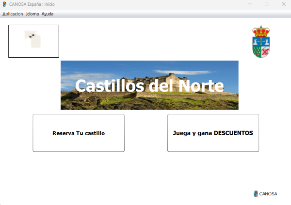
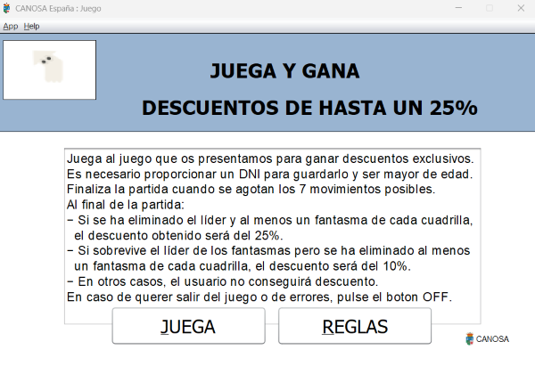
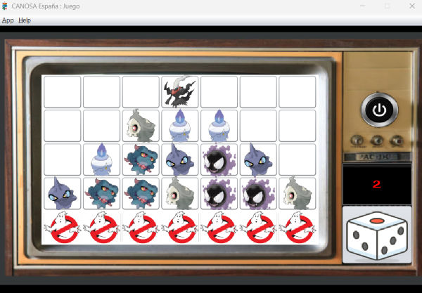
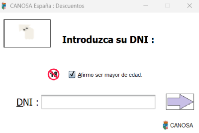

GhostBusters, la maquina de descuentos
Como acceder al juego
Para jugar al juego no es necesario proporcionar un DNI mientras no se quiera acceder al registro del descuento.
Para acceder al juego puede hacerse de dos formas:
- 1. Mediante la pestaña de titulo pulse el boton "Juega y gana DESCUENTOS", este le llevara directamente
a la pestaña con las instrucciones del juego y sus recompensas.
- 2. Mediante la pestaña de reservas, antes de acceder al formulario de datos del usuario, se le preguntara
si desea utilizar un descuento, si buscas un descuento con tu dni y no tienes ninguno asignado,
se le presentara la opcion de ganar uno, que te llevara tambien a la pestaña de juego.

Como iniciar el juego
Una vez alli, mostrara el siguiente texto con todas las recompensas obtenibles mediante el minijuego:
Finaliza la partida cuando se agotan los 7 movimientos posibles. Al final de la partida:
- Si se ha eliminado el líder y al menos un fantasma de cada cuadrilla, el descuento obtenido será del 25%.
- Si sobrevive el líder de los fantasmas pero se ha eliminado al menos un fantasma de cada cuadrilla, el descuento será del 10%.
- En otros casos, el usuario no conseguirá descuento.
Debajo de las recompensas, se encuentran dos botones:
- Jugar: Pulsando aqui dara inicio al juego.
- Reglas: Se mostrara una breve recopilacion del funcionamiento del juego.

Como jugar
Para aprender a jugar al juego, comenzaremos con los botones disponibles:
- Boton dado: Al presionar sobre este boton se simulara lanzar un dado, cuyo resultado se mostrara encima del mismo
- Boton apagado: Al presionar sobre este boton se cerrara el juego. Es util en caso de algun error en el gameplay.
- Tablero: Se reconoceran los botones de los cazafantasmas como botones utiles, aquellos los cuales el usuario puede hacer click,
y luego los botones de fantasmas o de espacios en blanco, donde si presionas saltara una ventana de error emergente
Una vez reconocido el material a utilizar, aqui estan los pasos para poder jugar:
- 1º Tirar el dado. Arriba de este aparecera el resultado, el cual sera o 1 o 2.
- 2º El resultado sera el numero de posiciones que podras mover al cazafantasmas de forma ascendente en el eje vertical.
- 3º Ahora presiona sobre el cazafantasmas que mas te interese mover en funcion del resultado del resultado del dado.
Esa secuencia se repetira las 7 tiradas que tiene el usuario disponibles por partida.
Ahora es importante tener en cuenta:
- No es posible moverse hacia atras, por lo tanto piensa bien tus movimientos.
- El cazafantasmas siempre se movera las posiciones del resultado del dado sin excepciones.
- Es importante no bloquear el movimiento de los cazafantasmas, pues sera necesario reiniciar el juego mediante el boton apagado
y se considera una forma de derrota para aumentar la dificultad.
Una vez sabemos como jugar, sera trabajo del usuario desarrollar su estrategia y depender de los resultados del dado.

En caso de ganar un descuento, se le preguntara al usuario si quiere guardarlo. Recuerde que solo se permite un descuento registrado por DNI,
por lo tanto si obtuvo un descuento del 10% y quiere conseguir uno del 25%, intentelo antes de guardar este.
La ventana donde puede registrar su descuento mediante DNI es la siguiente:
